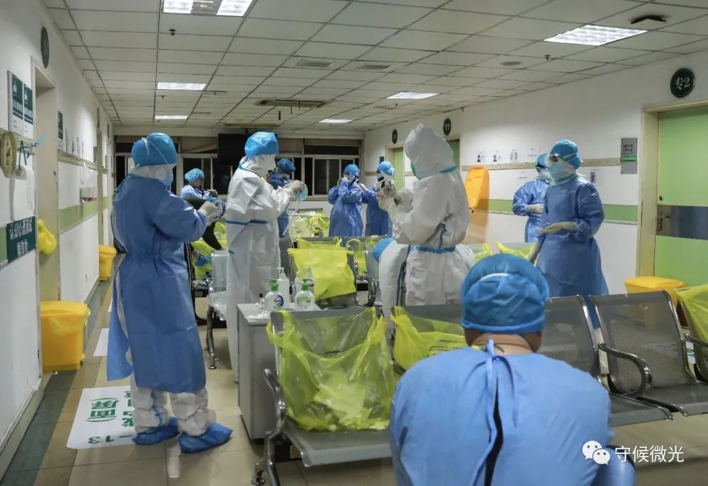
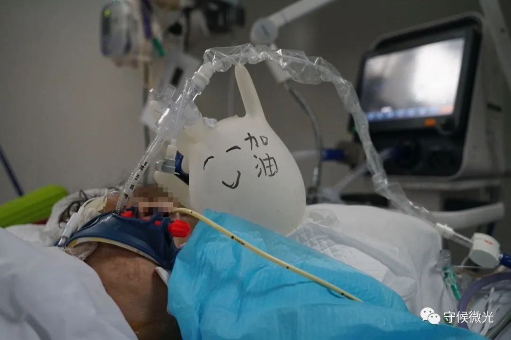
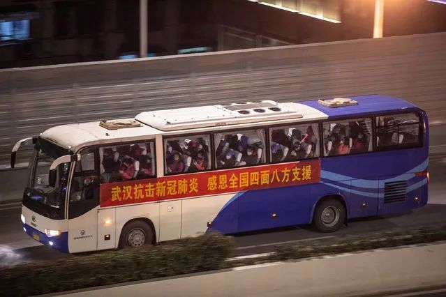
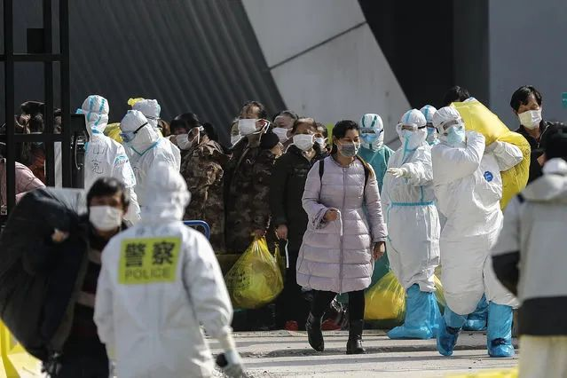

值得一听！一位从上海驰援武汉医生的谈话录音，很真实，很感人
原文链接 备份链接 这是驰援武汉的复旦大学附属中山医院医疗队领队朱畴文的谈话录音，讲述了他和他的团队从抵达武汉，进驻医院到参与治疗过程的经历，在谈到武汉和武汉人时，他几度声音哽咽。关于防护物资、关于病人收治、关于疫苗、关于心理压力、关于 …

2月29日凌晨两点，武汉市第一医院ICU隔离病房里，护士郑旭旺正在填写患者输液不良反应回报单。3天前下班路过ICU时，他看到病房里挤满了医生和护士在给一位患者上“人工肺”（ECMO），那是他第一次与如今护理的病人见面。中⻘报·中青网见习记者 鲁冲/摄
作者 | 中青报·中青网见习记者 张艺
编辑 | 刘世昕
这几乎是一个极小概率的事件，武汉第一医院急诊科医生张宁和其他9位大学同学毕业15年后再“相聚”在同一座城市，竟然是共同为了与一种全新的病毒赛跑。
15年间，张宁和同学分布在全国各地，各自有着不一样的人生轨迹，就连同学群很多时候也是寂静的。
20年前，他们是第四军医大学（现名空军军医大学）刚刚入学的少年，张华大队是他们共同的名字。
现在，他们成为中国医生的中流砥柱。他们从西安、长春、南京、新疆等地顶上来，承担起感控、重症、耗材、急诊各类工作。既要治病救人，也要保护医生，他们同在一线，但他们又是如此不同。
“武汉的同学有些挺不住了”
新型肺炎病毒的突袭，一开始让医护人员都有些措手不及。
急诊室首当其冲。早期，不寻常的发热症状已经在武汉的急诊圈传开。张宁的同学之一方庆，就职于一家位于武昌区的医院，是急诊科的主治医师。1月2号，医院就加派人手到发热门诊，并开始对医护人员开展相关培训。
1月25日，在收到武汉第七医院的求助函，方庆带着7位医生、15名护士，去支援第七医院一个收治了48名病人的病区。由于人手不足，除了一位重症科、一位呼吸科的医生外，来的多是内科、外科医生，其中的心内科医生石金虎正是方庆的大学同学。
方庆是病区主任，第一个任务是要让无序的医疗流程恢复有序。每个病人具体到第几天做哪些事情，要查哪些指标，病情到哪个地步，要上哪些药？还得方庆一个个地来盯。
年龄最小的护士只有23岁，有的护士个头跟氧气罐差不多高，一天要运两三罐氧气，4小时一趟。一只氧气罐装满的状态有200多斤，39岁的方庆也扛不动，只能一点点滚着，从门口送到病人身边。
病情最凶的时候，7个危重病人要同时上插管、呼吸机。可是设备不够，氧气不够。
这样的情况让很多大夫都特别难受，原本医生可以借助现代医学的仪器设备帮助病人渡过难关，但物资短缺时，真的无能为力。
一个普通的医院，一般透析设备也就几十台，不会超过百台。但最开始那几天，需求量动不动就要上千。“突然增多的重症病人一下子把医院搞瘫痪了”，方庆回忆。

2月29日凌晨1点半，武汉市第一医院缓冲区内，医护人员在穿防护服。中⻘报·中青网见习记者 鲁冲/摄
与方庆的焦虑不同，张宁从西安来支援的同学许朝晖担心的是，许多普通医院的病区也不符合传染病三区两通道的要求。这位长期在感染控制科工作的大夫说，房子没办法推倒重来，很多新冠肺炎定点医院的划区改造比新建医院还要困难。
他所支援的武昌医院就困难重重。一般情况下，医务人员在清洁区可以脱掉口罩，吃东西喝水，但是武昌医院原有的通道和缓冲间混得太近了。脱衣间只有三四平米，出来的医生多，有的脱到最后一件了，有的刚开始脱，很容易造成交叉感染。
武昌医院花了两天时间来重新划分黄区（缓冲区）和红区（隔离区）。这家医院的问题不止在结构上，院长刘智明的感染对该院医护的士气打击也很大。来支援的大夫都有一个共同的信念，先顶上去，让这家医院的同行们缓一缓。
出发前，毕业后一直在长春工作的刘野向武汉的同学了解到的情况是，一线的医护人员快挺不住了。
初期留不住患者时，真的很无力
作为张宁的同学，从长春来支援的刘野是一名重症科的大夫，他主管的病人老李是驰援医院第一位用上ECMO的患者。
一次ECMO就是几十万的成本，非常昂贵，并不是普通医疗可以享受到的治疗。ECMO原本用于心脏移植的病人，维持生命体征。现在重症新冠肺炎最后也导致心肺功能衰竭，因此在医生看来，ECMO应该是有用的。
上ECMO的第二天，老李的指标还都很好。但后来心脏出了问题，虽然血氧提上去了，心脏却一直不行，最后还是没有抢救过来。这让医生们措手不及，“他用了八九天慢慢好起来，离去的过程却那么快。”
老李在重症病房待了13天，这不是一件容易的事，大夫相信他可以活下去，甚至还畅想老李转去普通病房、最后出院的场景。
张宁听说，老李去世两天后，刘野接到老李女儿的来电，想知道老李最后离开的情形。
那个晚上，刘野在电话里默默听着哭声。他告诉老李的女儿，老爷子走的时候挺平静的，他是在昏迷当中离开的，应该感觉不到痛苦。
老李的女儿说，谢谢你，谢谢你们。
“你想象不到，你父亲没了之后，作为一个医生我有多难过。我管你爸13天，我原以为老李会成为我管好的一个样本，但是没想到上ECMO之后是这样的，居然没有。” 和同学们提起这段时，刘野也哽咽了。
医生之间偶尔交流着这些无奈。有一阵子，尽管新增人数少了，但还有一部分病人病情在恶化。医生们常常要面对的是，“白班看着这个人还跟我打招呼，第二天夜班接班时，患者就不在了”“ 防护服还没脱完，病人的心跳停了，没有任何征兆，也不给他机会”。
在一般的病程中，病重后会经历昏迷，心脏、血压指标恶化，是一个缓慢的过程，但新冠肺炎不是。从情况不好到抢救只半个小时或者一个小时，抢救前病人还跟大夫有说有唠的，过不来的就没了。
如果见证了一个病人从生到死，就会知道深刻理解这个病的凶险在哪，抢救点在哪？要在什么时间提前做哪些应对，知道什么时候他开始往下滑，需要伸手拉他一把。
虽然经验多了，前来支援的医生们有时仍然无法避免绝望。刘野曾跟另一位主任医生说过，“很多病人在我手里想死都难，我能保证做到这种程度。”但开始那个阶段看着现在接手的病人一个接一个离去，刘野感觉自己的能力没用上，这么多年的技术在这个病面前好像施展不开。

2月29日凌晨，武汉市第一医院负压ICU隔离病房里，护士们给一位昏迷中的新冠肺炎病人翻身，避免长时间不动身体形成压疮。中⻘报·中青网见习记者 李强/摄
保平安，庆余年
除了救命，医生也要关照病人的心理。
长期居住在武汉的同学告诉前来支援的老同学们，当地人有个特点，轴。一位50多岁的阿姨让刘野感受到了这种“轴”。她是刘野收治的第一批患者，一开始对医院的条件并不满意，晚上还能听到正在施工的声音。刚见面，她一下子甩给医生一连串的问题：我什么时候能见家人？我的病什么时候能好？你们这是什么医院？怎么是这样的？你们能给我用什么药？
“说到底还是担心治疗得不到保障。”解释了半天才让阿姨打消顾虑。刘野告诉这位阿姨，前来支援的每一位医生在当地能独当一面的，有的平时都一号难求，现在专门来治疗，大家不用担心。现在你前面的治疗已经挺好的了，后续咱们就按部就班地治就行。九十九步都过来了，就差最后一哆嗦了。
医生首先要给病人信心。方庆说，之前可能更多的任务是救命，现在既要提高治愈率，也要关注病人的情绪。
不久前，武汉第七医院的48位病人收到了一份暖心早餐，护士亲手熬制的小米粥。
原来，病毒感染会引起口腔继发性感染，很多病人患上口角炎、唇炎、溃疡、口角疱疹，到了病程中期，吃不下盒饭，喉咙也痛。一次查房时，有护士发现患者周爹爹默默流泪，情绪低落。询问后才知道，患者肠胃不佳，胃口差、频频恶心呕吐。周爹爹说，自己隔离治疗，家人不在身边，不太习惯医院的饮食，就想喝上一碗热乎乎的粥。
这个病区是平均年龄65岁的老人，“你想，发烧的时候喝口热粥该是多么舒服的一件事。”可是如果在医院食堂里煮，送到病人手里都凉了，而且当时后勤力量确实不足。方庆跟护士长提议，在病房里煮些小米粥，让他们随时都能喝到。于是，负责物资配送的人从家里带来一个电饭煲，再加上爱心人士捐赠的小米，就这样，热乎乎的粥送到了病人嘴边。病人吃得下饭，也就慢慢挨过来了。
因为居家感染的多，病区里还有5对夫妻，都是六七十岁的婆婆爹爹。情人节的时候，方庆想了点子，给爹爹准备了鲜花，让他们送给老婆。平时很少表达爱意的老人也玩了一把浪漫，有位老爷子录了视频说，“等我出院了，老婆我一定带你去欧洲，我们从上海坐轮船去日本看樱花。”
“病房隔绝的是病毒，不隔绝爱。”两位病人同一天过生日，医生护士们纷纷送贺卡、画画、写诗。方庆写了一句：保平安，庆余年。
对重症病人来说，插管、上呼吸机、进入ICU是一段恐怖的记忆，如果病人的心智不够强大，即便出院，也会在心里留下很大创伤。方庆说，我们想让病房变得不那么沉闷，灾难永远都是一时的，但人还是要活一辈子。

2月29日凌晨，武汉市第一医院负压ICU隔离病房里，一位进行了气管插管的新冠肺炎病人，大部分时间都处于昏迷状态。为了防止管道压在病人身上，护士用手套吹了一个气球，放在病人枕边，预防压疮。为了调节气氛，气球上画了一张笑脸，写着“加油”二字。中⻘报·中青网见习记者 李强/摄
一个不少地安全回去
最靠近危险的医生背后也有一道堤坝，在医院负责感染控制的许朝晖就是他们的保护者之一。
从老家回到单位，再到支援武汉，不到24个小时，他辗转三地。
1月24日，许朝晖还在安徽庐江县老家，5个月前，父亲做了食管癌切除手术，他打算今年陪父母在家过年。凌晨三点多，许朝晖接到了单位电话，武汉需要支援。
常年做感染控制的许朝晖心里明白，疾病的传染性非常强，还有一定的死亡率。过年期间封城这种事情，历史上从来没有过。
挂断电话，他立马订了合肥飞往西安的机票。尽管平时一年才能和儿子见一面，73岁的父亲也支持，“养兵千日用兵一时，儿子能被国家用得上，也挺欣慰的。”临行前，父亲叮嘱他，保护好自己，给国家做贡献的时候一定不能怂。
许朝晖还在飞机上，另一头，妻子在西安已经给他准备好了行囊，换洗衣服、日用品、脸盆，收拾完毕开车到机场等他。
中午11点多飞抵西安，没来得及回家看两个孩子，许朝晖就立刻带着背囊赶往单位。
那晚，单位给大家多做了几个菜，准备了一顿丰盛的晚餐，领导在饭堂给许朝晖和同行的伙伴们送行。妻子让他留点肚子，她偷偷从家里赶来，带了半只鸡，在许朝晖的单人宿舍里，两人也算一起吃了顿年夜饭。
晚上11点58分，医疗队准时到达武汉。空无一人的感觉，让许朝晖一时没回过神，“这个城市真的安静下去了”。但他并没有特别紧张，到了酒店，仍然有服务人员接待，这说明最起码秩序是稳定的。对一名疾控工作者来说，一个地方能否有序运行，指令能否落地十分重要，这意味着，最关键的任务——隔离，可以落实，情况依然可控。
作为最早一批支援武汉的部队医生，他记得 “打胜仗，零感染”是出发前领导的要求，不仅要完成救治任务，我们的医护人员也必须一个不少地带回去，二者同等重要。
许朝晖负责后半部分，他要把很多工作做在前头。来武汉之后的第一件事就是对武昌医院的医护培训。他说，个人防护必须严格按照标准流程走，这是对自己生命的负责，也是对团队负责任。过不了关，坚决不能上岗。防护服使用不规范，就反复穿脱练习。
在武汉当地一家医院工作的龚玖瑜听说老同学许朝晖来了，觉得他可能遇到物资困难、吃的不习惯的问题，便主动联系他。许朝晖回复，吃得还行。龚玖瑜怕他客气，就主动点外卖，送去几盒酸奶、泡面顶一顶。
不过，除了忘记带上剃须刀的充电器，许朝晖在生活物资上确实没什么问题，“因为大家都戴着口罩，所以没人知道我胡子长了多长。”第二批救援队来时，同事也捎来了他的充电器。
其实，最大的困难还是缺医疗物资。刚到武昌医院时，遮挡喷溅的防护面屏没有了，他们就采购了一批3毫米左右的透明软塑料软桌布，裁成一块一块的，打出一个点，后盖用绳子穿进去，额头接触的地方贴上软泡沫软胶，自制面屏。
在刘野到达援助医院的同一天，许朝晖也结束了武昌医院的改造培训工作，指导一家医院的施工监理，确保每个细节无误：哪些水龙头需要非接触，传递仓的负压怎么做、哪个角度安装紫外线消毒灯最精准、产生的医疗废物如何处理。此外，保证人流、物流和气流正向运作，即进了污染区，就不能再退回到潜在污染区，更不能退回到清洁区。
他要特别注意医护人员疲劳至极“智商掉线”的时候，备好紧急处理箱和详细的操作图示，一有需要，保证第一时间找到应急工具和方法。正因有了感控人员的严格把关，才让直接接触病人的医生有底气说出，“只要做好了三级防护就不怕。”
彼时，负责重症的、感控的、物资的医生同学虽然可能就在一家医院，但谁也不知道距离对方或许只有一墙之隔。
直到2月中旬，刘野在领物资时，意外撞见了15年没见的老同学金鑫。原来，几乎在刘野到达的同时，金鑫也跟随近170人的医疗队从南京赶来，他负责受援助医院的医疗后勤保障。
刚来的第一周，金鑫每天只能睡三四个小时。今天的耗材、药品用完了，第二天如果不到位，当天的医疗工作可能就要停工。他需要的物资，时常在凌晨一两点时送达，得立刻卸车，装进库房。受援助医院有1000张床位，每天大约有30箱防护服运来，一箱50件，再加上口罩，上万件的物资在这里被快速消化，一个10吨的氧气罐只能保证援助医院的病人一天的用氧量，物资还是紧巴巴。
许久不见，刘野甚至不相信金鑫已满头白发。
2月18日晚，湖北省武汉市武昌区，一辆载满乘客的大巴车从二环路上驶过。中青报·中青网记者 李隽辉/摄
吃着肉夹馍成长的同学去帮“热干面”
没有人主动说自己来了武汉。比如许朝晖，直到有同学看见海报上的照片才知道。一些受援助医院开放医护信息的时候，群里才有了偶遇同学的消息，大家的秘而不宣才被打破，那时一搜罗发现，已有七八个人都在武汉了。
最让龚玖瑜意外的是，自己远在乌鲁木齐的闺蜜也来了。大学时，俩人是亲密无间的室友。来之前，闺蜜问她，武汉现在是什么气候，要带什么衣服？
闺蜜从新疆来支援武汉的一家医院，龚玖瑜说，武汉与乌鲁木齐两地甚至还有时差，真感谢他们千里迢迢来加入战斗。
 张宁医生的朋友圈（受访者供图）
张宁医生的朋友圈（受访者供图）
在武汉本地的张宁为自己的同学骄傲，毕业后好几次，他邀请同学来家乡玩，但工作忙得连轴转，一直也没人来过，这次大家纷纷请战。他们说，“共同吃着肉夹馍成长起来的兄弟姐妹，一起去帮‘热干面’。”
目前，全国已有4万多名医务人员赶赴武汉，张宁的同学们就是这四万分之一。
他们上学时所在的二大队曾经是光荣的张华大队。1982年，24岁的第四军医大学学员张华，因救助老人溺粪牺牲，这在当时掀起了一场社会大讨论：大学生舍命救老农民，值不值？
张宁说，这件事对那时的青年人影响非常大。2000级二大队的同学的入学第一课就是有关张华的教育课：危难的时候，要挺身而上。
几乎每一届的二大队都有荣誉傍身，包括后来的华山抢险。龚玖瑜记得，“他们手拉着手，站在悬崖边，挡着从上面滚落下来的群众，那时如果有一个人松手，大家就都垮了。”
二大队五年一届，上一届毕业的师兄给下一届刚入学的同学当班长，言传身教，如接力棒般，将荣誉用行动传承下来。但模范不仅是称号，也意味着更多的责任。这个集体被更加严格地要求，接受更加严格的训练。五年下来，他们在一起吃过苦、受过训的经历中结成更加深厚的情谊。
一位超声科的同学1月底也来到武汉一线。此前，他已被批准，今年3月从部队转业，自主择业。但现在，他仍然义无反顾地来了。在他们心里，这是致敬前辈的时刻。
20年后，这些少年已经成为中国医生的中流砥柱。有的已是科室主任，有的当上了高校博导，有的参与了汶川地震救援，有的去过援非抗击埃博拉病毒。接到疫情任务时，他们毫不犹豫地说，“职责所在”“我们不上谁上” “ 我们顶得上去”。
3月7日下午，武汉客厅方舱医院外，几名新冠肺炎患者走出医院准备乘车转入雷神山医院。当日上午，武汉客厅方舱医院25人治愈出院，下午59人转到雷神山医院。随着最后一位患者转出，武汉客厅方舱医院患者“清零”。中青报·中青网记者 赵迪/摄
同学群把天南海北的他们再次连系在一起。在群里，大家讨论的除了疫情还是疫情。他们分享最新的资料和数据，互相提供专业经验。新药研发试验情况，大家一块讨论。临床一线的人没时间查资料，后方的同学就主动帮着找文献。“不止是我们的同学群，全国的医生同学群可能都是这样。”刘野说，我希望能够尽快有一个好消息出来。
其实，刘野在武汉有过好消息。2月21日，刘野在战疫一线度过了一个特别的38岁生日，这天，也是他入党宣誓的日子。
至今未婚的刘野在同学里可能是独一份。同学们形容这个东北男孩帅气、幽默、阳光。可在刘野自己眼里，生活中的他一直没有军人的那种“板正”。
党员在他心目中是“高大上”的。毕业后，他一直都觉得自己还有些差距。“还有差距，就不要给党员拖后腿”，抱着这种想法，刘野慢慢成了院里“头疼的”大龄单身没入党男青年。
从长春出发前，刘野交给医务处主任一份入党申请书。交完暗暗告诉自己，终于可以申请入党了。在武汉期间，他还向党组织发去了自己的战地日记。
这天完全是个巧合，宣誓现场没有人提起他的生日。晚上7点多，宾馆送来一碗面，一根到底的长寿面，刘野全吃了，一点儿汤底也没剩，感觉很温暖。
两年前的春天，刘野曾登上蛇山山顶，站在黄鹤楼眺望远处的长江大桥，江水奔流不息。再来武汉，却如赴战场。决心书上，刘野写了16个字：首战用我，用我必胜，兵锋所指，一往无前。
中国青年报·中国青年网出品
微信编辑 | 陈轶男

觉得好看请点这里
原文链接 备份链接 这是驰援武汉的复旦大学附属中山医院医疗队领队朱畴文的谈话录音，讲述了他和他的团队从抵达武汉，进驻医院到参与治疗过程的经历，在谈到武汉和武汉人时，他几度声音哽咽。关于防护物资、关于病人收治、关于疫苗、关于心理压力、关于 …
原文链接 备份链接 我们该从疫情中获取怎样的“抗体”和“免疫力”？1月29日，大年初五，在武汉市汉口解放大道，一位被确诊新冠肺炎的患者正在转院。摄影/长江日报 金思柳 疫情“罗生门”：患者、医者、决策者 《中国慈善家》记者/温如军 吴可 …
原文链接 备份链接 Original 霍思伊 杨智杰 中国新闻周刊 中国新闻周刊 WeChat ID chinanewsweekly About Feature 这里是《中国新闻周刊》掌门周刊君，影响有影响力的你。和我一起拨开迷雾，追寻真 …
原文链接 备份链接 1月21日下午，我们三人就住进了武汉金银潭的一家酒店，然后迅速开始了解情况。两位记者去华南海鲜市场摸情况，我一边做北京朝阳医院陶勇医生被伤事件的电话采访、赶微信稿，一边询问武汉的医生朋友。我们三人在酒店房间第一次碰面 …
原文链接 备份链接 记者/ 魏晓涵 梁婷 韩谦 佟晓宇 实习记者/ 陈威敬 胡琪琛 编辑/杨宝璐 宋建华 医护人员严阵以待 摄影/高瞾 2019年12月30日，武汉市卫计委内部文件流出，称“武汉出现不明原因的肺炎”，与华南海鲜批发市场有 …